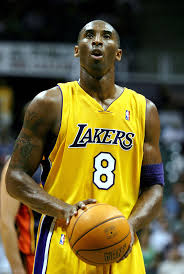

Kobe Bryant
Laker's legend

Kobe Bryant in a Laker's uniform.
Time line of Kobe's life.
- 1996-With the 13th pick in the 1996 NBA Draft, the Charlotte Hornets selected Kobe Bryant, the teenage phenom from Lower Merion High School in Philadelphia
- 1997-Bryant was 18 by the time All-Star Weekend rolled around. He didn’t make the team, but he did participate in the Rookie Challenge, and he won the Slam Dunk Contest
- 1999 - 2002-The Lakers had been a playoff team with Bryant and Shaquille O’Neal, but they hadn’t quite reached championship form. The furthest they’d made it was to the conference finals. That all changed when Phil Jackson arrived.
- 2004-Bryant and O’Neal had butted heads since they first teamed up in 1996. Shaq took issue with the style of basketball Bryant played, labeling him “selfish” and a “show off.” Bryant didn’t like the way O’Neal conditioned himself for the season and disproved of his antics when he wanted a higher salary. They held it together during their championship runs, but the cracks showed more than ever when they fell short against the Detroit Pistons in the 2004 NBA Finals.
- 2006-On Jan. 22, 2006, Bryant scored a career-high 81 points against the Toronto Raptors. It’s the second-highest points total in a single game in league history.
- 2008-The United States Men’s Basketball team suffered a humiliating finish in the 2004 Summer Olympics in Athens, Greece. Despite being the overwhelming favorites to win the gold medal, the squad only earned the bronze. That changed when Bryant joined the squad ahead of the 2008 Summer games in Beijing. In eight games, Bryant averaged 15 points. He erupted for 13 points in the final quarter of the gold-medal game against Spain, which the Americans won 118-107.
- 2008 - 2010-Bryant was already a three-time champion, but he had never won one without Shaq. O’Neal had gone on to win another title in Miami. And the supporting cast Bryant had played with since O’Neal’s departure was never nearly as talented. But when the Lakers traded for Pau Gasol in February 2008, Bryant’s fortunes changed for the better.
- 2012-Bryant donned the red, white and blue for the final time in 2012. He won his final gold medal at the 2012 Summer Olympics in London.
- 2016-Bryant spent the rest of his career chasing a sixth NBA title, which would have tied him with Michael Jordan. But injuries plagued him his final few seasons. On Nov. 29, 2015, Bryant published a poem in The Players Tribune, titled “Dear Basketball.” In it, he announced that he would be retiring at the end of the season. On April 13, 2016, Bryant played in his final NBA game. But it wasn’t a declining star’s melancholy limp across the finish line. Bryant came to play. He scored a season-high 60 points in the Lakers’ 101-96 win over the Utah Jazz.
"I've shot too much from the time I was 8 years old. But 'too much' is a matter of perspective. Some people thought Mozart had too many notes in his compositions. Let me put it this way: I entertain people who say I shoot too much. I find it very interesting. Going back to Mozart, he responded to critics by saying there were neither too many notes or too few. There were as many as necessary."
--Kobe Bryant
I got the timeline content from other website, if you want to you can check it out here.